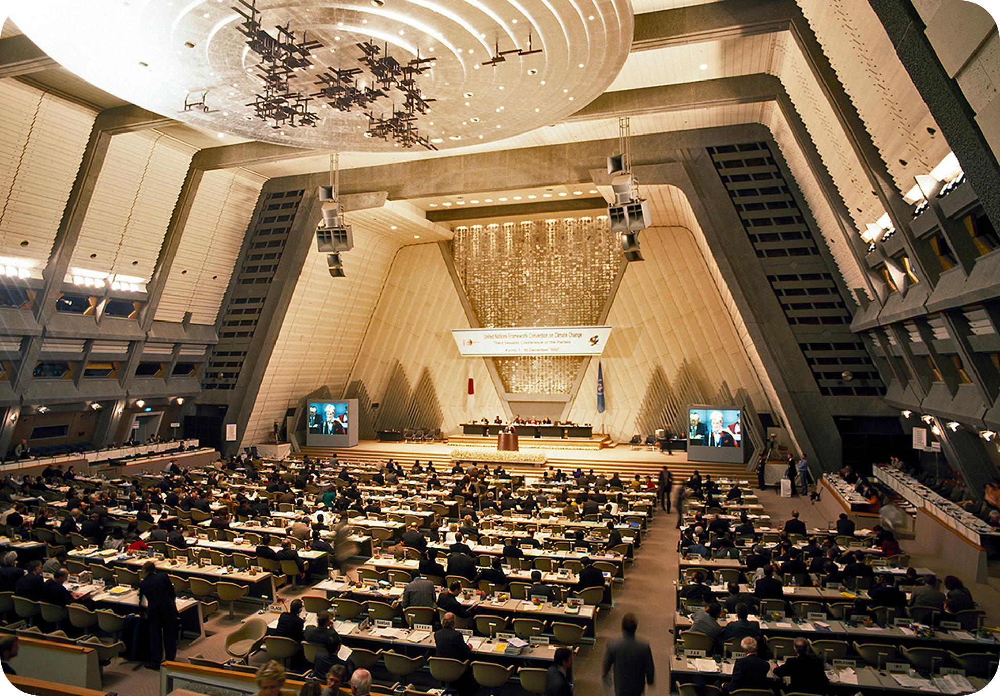
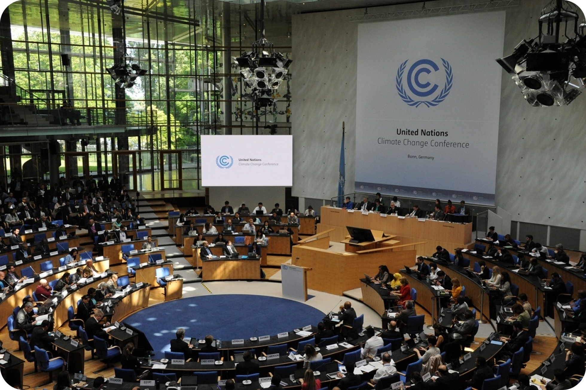
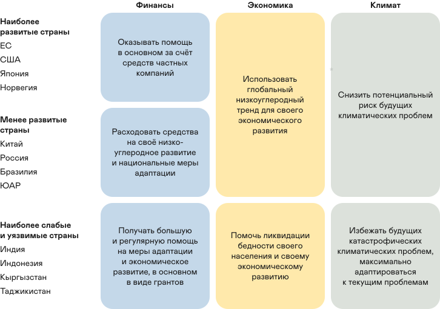
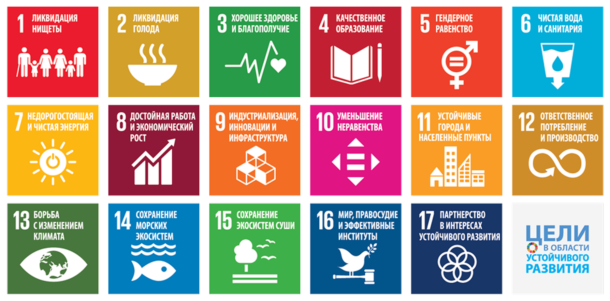
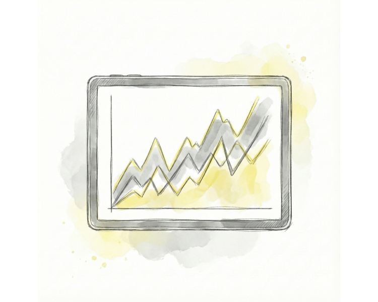
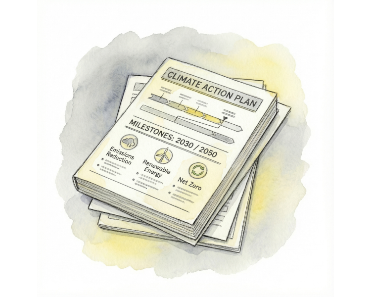
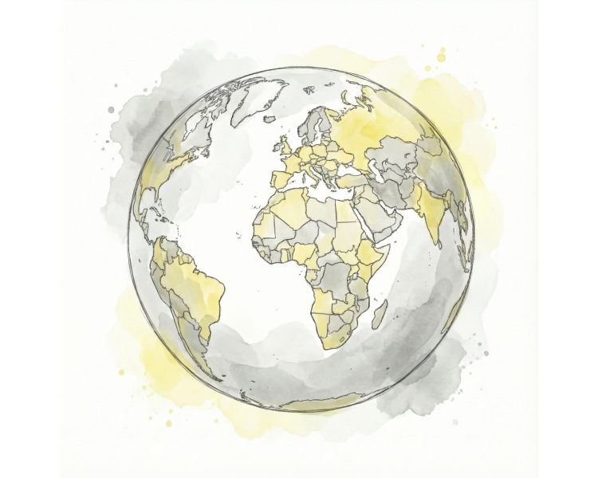
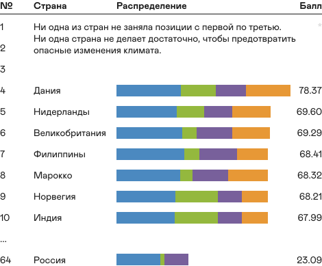
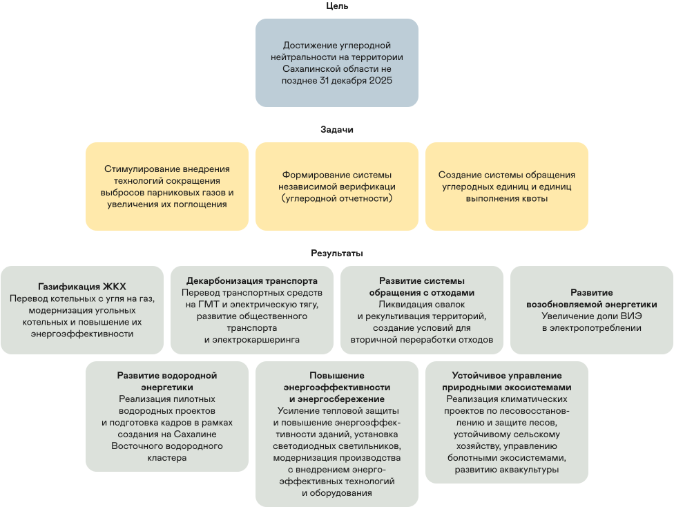
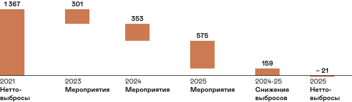

Проблема изменения климата стала слишком масштабной, чтобы её могли решить отдельные компании или страны. Чтобы найти совместное решение, страны создают международные соглашения и разрабатывают национальные стратегии по снижению выбросов.
Международное климатическое сотрудничество
В 1988 году Организация Объединённых Наций официально признала изменение климата одной из главных угроз для человечества. Чтобы разобраться в проблеме, ООН в том же году собрала лучших учёных со всего мира в Межправительственную группу экспертов по изменению климата (МГЭИК). Их задачей стал анализ научных данных, чтобы точно определить, как деятельность человека влияет на климат.
Первый доклад МГЭИК вышел в 1990 году. В нём учёные подтвердили: угроза изменения климата реальна, и она напрямую связана с деятельностью человека. В последующих докладах МГЭИК продолжала уточнять свои оценки, основываясь на самых свежих научных данных.
Источник: IPCC; CO₂ data from Mona Loa Observatory, Hawaii (Dr. Pieter Tans, NOAA/GML и Dr. Ralph Keeling, Scripps Institution of Oceanography)
Рамочная конвенция ООН по изменению климата (РКИК ООН)
К началу 1990-х годов учёные пришли к выводу, что бороться с изменением климата нужно всем миром, и лучшей площадкой для этого стала ООН. В 1992 году страны договорились о сотрудничестве и приняли основной международный документ в этой области — Рамочную конвенцию ООН об изменении климата.
Главная цель конвенции — не допустить опасного влияния человека на климатическую систему, стабилизировав концентрацию парниковых газов в атмосфере. В основе документа лежит принцип «общей, но дифференцированной ответственности»: хотя ответственность за климат лежит на всех, развитые страны должны брать на себя ведущую роль и помогать развивающимся странам финансово и технологически.
Для оценки своей работы все страны-участницы подают стандартизированные отчёты — «определяемые на национальном уровне вклады» (ОНУВ), в которых рассказывают о своих выбросах и мерах по их снижению. Развитые страны обязаны отчитываться каждые четыре года, а развивающиеся стараются делать это так же часто.
Секретариат РКИК ООН находится в Бонне в Германии.
Киотский протокол
Климатическая конвенция регулировала действия стран только до начала XXI века. Поэтому уже в 1995 году на первой конференции её участники решили разработать новый, более конкретный документ. После сложных переговоров в декабре 1997 года в японском городе Киото они приняли Киотский протокол.
Протокол впервые установил конкретные объёмы и сроки сокращения выбросов, а для их достижения предложил рыночные механизмы — торговлю квотами на выбросы. Он требовал от стран действовать в первую очередь на национальном уровне, но в помощь им дал три гибких инструмента:
- международную торговлю выбросами,
- механизм чистого развития (МЧР),
- совместное осуществление (СО).
Идея этих механизмов проста: снижать выбросы там, где это дешевле всего, например, в развивающихся странах. Это также стимулировало «зелёные» инвестиции и помогало бизнесу переходить с устаревших, «грязных» технологий на чистые.

Третья конференция сторон Рамочной конвенции ООН в Киото
Парижское соглашение
Киотский протокол показал ограниченную эффективность, так как не все крупнейшие мировые загрязнители, включая США, его ратифицировали, а Канада вышла из соглашения. Тем не менее, он создал важный прецедент: впервые установил юридически обязательные цели по выбросам и заложил основу для рыночных механизмов, подготовив почву для нового, более амбициозного договора.
В 2012 году было принято решение начать переговоры по новому глобальному климатическому соглашению. Результатом этих переговоров стало Парижское соглашение, принятое в 2015 году.

Церемония подписания Парижского соглашения по климату
Главная цель соглашения — удержать рост глобальной средней температуры «намного ниже» 2 °C сверх доиндустриальных уровней и приложить все усилия, чтобы ограничить его 1,5 °C.
Для этого каждая страна самостоятельно определяет и представляет свои долгосрочные цели по снижению выбросов до 2030 года — так называемые «определяемые на национальном уровне вклады» (ОНУВ). Кроме того, страны должны разрабатывать долгосрочные стратегии низкоуглеродного развития и планы по адаптации к уже неизбежным последствиям изменения климата.

17 целей ООН в области устойчивого развития
Борьба с изменением климата — это часть более широкой глобальной задачи по достижению устойчивого развития. Эта концепция основана на трёх компонентах — экономическом росте, социальном благополучии и экологической безопасности — и проблема изменения климата напрямую влияет на каждый из них.
В сентябре 2015 года на Генеральной Ассамблее ООН 193 страны приняли «Повестку дня в области устойчивого развития до 2030 года». Её ядром стали 17 Целей в области устойчивого развития (ЦУР), которые призваны направить действия всех стран и стимулировать международное сотрудничество в самых важных для человечества и планеты сферах.
Хотя борьбе с изменением климата посвящена отдельная Цель 13, на самом деле эта проблема пронизывает все 17 целей. Изменение климата напрямую угрожает борьбе с голодом, доступу к чистой воде, здравоохранению и экономическому росту. Поэтому сегодня очевидно: достичь большинства Целей устойчивого развития невозможно, если не принять решительных мер по борьбе с изменением климата.

НКО, общественные движения и активизм
Помимо государств, в борьбе с изменением климата ключевую роль играют неправительственные организации (НКО), общественные движения и активисты. Они формируют общественное мнение, привлекают внимание к климатическим проблемам и добиваются реальных действий от правительств и корпораций.
Лучшие мировые практики климатического регулирования
Чтобы эффективно регулировать выбросы, страны используют несколько ключевых подходов:

Создание углеродных рынковСистемы торговли квотами и углеродными единицами
Для компаний, которые внедряют «зелёные» технологии

Национальные стратегии низкоуглеродного развития Зелёное финансирование
Зелёное финансирование

Трансграничные механизмыУчитывают углеродный след импортируемых товаров
Для обмена опытом
Как измеряют успехи стран?
Чтобы оценить, насколько эффективно страны борются с изменением климата, был создан Индекс эффективности в области изменения климата (CCPI). Он анализирует 57 стран и Европейский Союз, на которые в совокупности приходится более 90% мировых выбросов парниковых газов.
Рейтинг CCPI
Индекс рассчитывается на основе 14 критериев в четырёх категориях:
- Выбросы парниковых газов (вес 40%).
- Возобновляемая энергия (вес 20%).
- Потребление энергии (вес 20%).
- Климатическая политика (вес 20%).

Источник — ccpi.org
Главный вывод последнего рейтинга CCPI: ни одна страна не получила оценку «очень высокая». Никто в полной мере не выполняет требования Парижского соглашения — удержать глобальное потепление на уровне ниже 2 °C. Поэтому первые три места в рейтинге традиционно остаются пустыми.
Государственная политика и климатическое регулирование в России
Чтобы участвовать в международном климатическом сотрудничестве, у каждой страны должна быть собственная внутренняя политика. В России этот подход основан на двух ключевых направлениях: регулировании выбросов и адаптации к последствиям изменения климата.
Регулирование выбросов
Основа российской климатической политики — это участие в международных соглашениях. Россия присоединилась к Рамочной конвенции ООН, ратифицировала Киотский протокол в 2004 году, а в 2019 году — Парижское соглашение, подтвердив свои обязательства по снижению выбросов.
Эти основные документы дополняются другими законами (например, ФЗ «Об охране окружающей среды») и подзаконными актами, которые конкретизируют механизмы климатической политики. За государственную политику и нормативное регулирование в области ограничения выбросов парниковых газов в России отвечает Министерство экономического развития.

Климатическая доктрина РФ
Главный документ, который определяет общую политику страны и ставит цель достичь углеродной нейтральности к 2060 году.
Посмотреть →
Стратегия низкоуглеродного развития до 2050 года
Определяет конкретные шаги по достижению углеродной нейтральности, включая развитие возобновляемой энергетики, повышение энергоэффективности и использование поглощающей способности лесов.
Посмотреть →
Федеральный закон № 296-ФЗ об ограничении выбросов парниковых газов (2021)
Ввёл обязательную углеродную отчётность для крупных предприятий, механизм климатических проектов и систему углеродных единиц.
Посмотреть →Адаптация к последствиям изменения климата
Помимо снижения выбросов, Россия активно готовится к тем изменениям климата, которые уже неизбежны. Эта работа ведётся поэтапно в рамках национальных планов адаптации. Основой для неё стала утверждённая в 2019 году Национальная адаптационная стратегия, которая направлена на защиту населения, инфраструктуры и экосистем.
Несколько ключевых документов определяют основу для адаптации. Климатическая доктрина Российской Федерации определяет упреждающую адаптацию как один из приоритетов и указывает, что все меры должны приниматься с учетом международных договоренностей. В свою очередь, Стратегия пространственного развития до 2030 года указывает на необходимость снижать уязвимость к негативным последствиям изменения климата и использовать его возможные позитивные эффекты.
Этапы национального плана адаптации
В 2022 году завершился первый этап национального плана адаптации. Этот этап был посвящён формированию в России целостной системы, включающей национальные, отраслевые и региональные планы, а также методическую базу. Его главная задача — помочь регионам и отраслям осознать климатические риски, определить их суть и возможный ущерб, а также подобрать меры для адаптации и предотвращения последствий.
Следующим шагом стал национальный план второго этапа адаптации, рассчитанный до 2025 года. Он направлен на актуализацию уже существующих отраслевых, региональных и корпоративных планов. При этом рекомендуется использовать официальные методические рекомендации, разработанные для этой цели.
Для оценки рисков в регионах была введена система «паспортов климатической безопасности». Чтобы обеспечить единый подход к оценке рисков, ущерба, отбору мероприятий и мониторингу их выполнения, Минэкономразвития России утвердило соответствующие методические рекомендации.
В результате в России сформировалась многоуровневая система управления адаптацией, в которой трёхлетние национальные планы выполняют роль координирующего инструмента. В 2025 году завершается второй план, и уже идёт подготовка третьего, до 2028 года. По состоянию на октябрь 2025 года в России утверждено 10 отраслевых и 82 региональных плана по адаптации.
За время реализации первых двух планов был собран большой объём информации о климатических рисках в регионах и связанном с ними ущербе. Поэтому ключевая задача при подготовке третьего плана — найти способы наиболее эффективно использовать эти данные.
Источник: НИУ ВШЭ, «Рейтинг регионов России по необходимости адаптации к изменению климата». Выделены топ-10 регионов по каждому риску («национальный взгляд», сценарий SSP2-4.5).
Сахалинский эксперимент
Ключевым шагом к созданию национального углеродного рынка в России стал Сахалинский эксперимент. Этот пилотный проект, запущенный в 2021 году, работает по простому принципу: компании в регионе получают квоты на выбросы парниковых газов. Если компания смогла снизить свои выбросы и у неё остался излишек квот, она может продать его другим участникам. Это создаёт прямой финансовый стимул для бизнеса внедрять экологически чистые технологии.

Результаты Сахалинского эксперимента
К концу 2024 года на природный газ переведут 38 муниципальных и 15 ведомственных котельных. Также газифицируют три асфальтобетонных завода. В Сахалинской области на газовое отопление перешли 57% домов — это 4 807 семей.
В 2024 году на газ переоборудовали более 5 800 автомобилей. В регионе зарегистрировали 420 электромобилей и 840 гибридов, а также закупили 253 газовых автобуса. Сеть зарядных станций выросла до 329 точек. В Южно-Сахалинске работает электрический каршеринг.
За год отремонтировали крыши и фасады 392 многоквартирных домов. На улицах заменили свыше 12 тыс. светильников на энергоэффективные. Область сократит потребление ресурсов на 28 млн кВт·ч и 123 тыс. Гкал в год.
В 2022 году запустили солнечную электростанцию на острове Итуруп. К концу 2024 года общая мощность «зелёных» источников достигнет 9 МВт. Выработка чистой энергии составит 24 млн кВт·ч в год, что снизит выбросы на 18 тыс. тонн CO₂-экв.
В 2024 году открыли первый на Дальнем Востоке водородный полигон. Сейчас на Сахалине формируют Восточный водородный кластер. В него войдут водородный завод, поезд и центр компетенций.
В области внедрили 100% раздельный сбор отходов. К концу 2024 года долю сортировки мусора на полигонах увеличат до 38%. Мощность новых и реконструированных очистных сооружений составит 1 млн куб. м в год.
Площадь лесов к концу 2024 года вырастет на 8 тыс. га. В результате природа будет поглощать на 350 тыс. тонн CO₂-экв. в год больше. Также учёные впервые оценили, сколько углерода удерживают морские побережья и болота.

Международные соглашения и национальные стратегии — это основа для борьбы с изменением климата. Но они не будут работать без участия каждого из нас.
Финальный раздел посвящен тому, какой вклад в решение проблемы можете внести вы, как наши привычки влияют на планету и какую роль в этом играет образование.